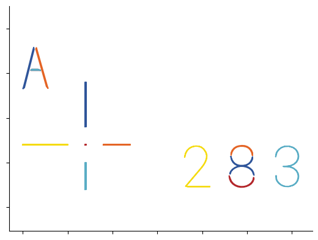
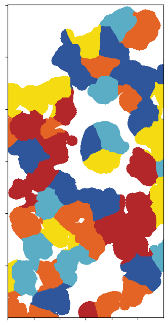
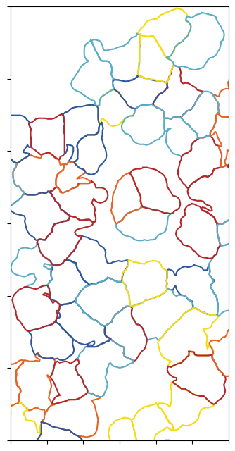
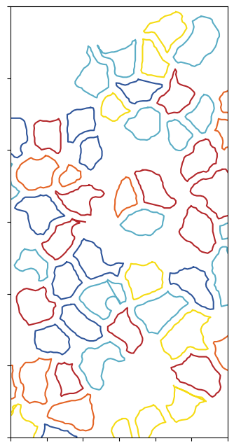
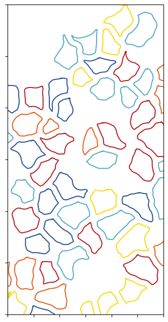
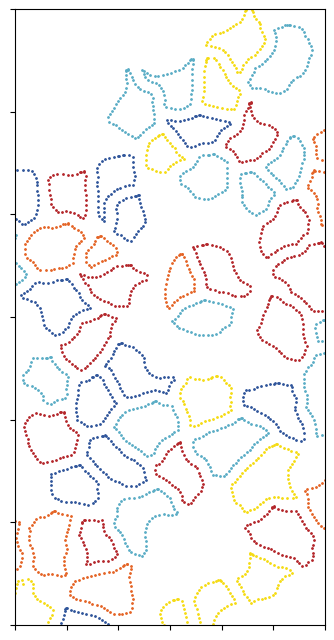
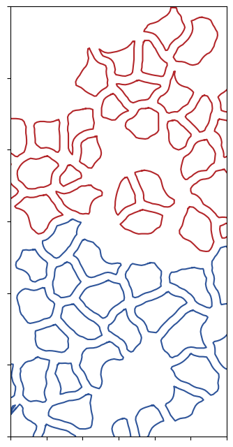
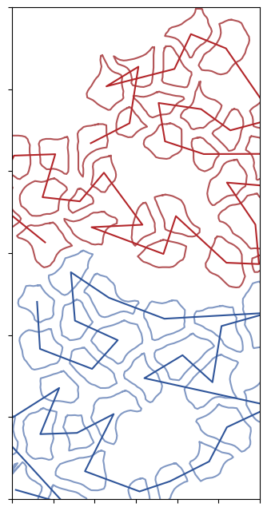

[12]:
%reload_ext autoreload
%autoreload 2
import matplotlib.pyplot as plt
import numpy as np
import pandas as pd
import os
from matplotlib.colors import ListedColormap
import matplotlib as mpl
regular_viper_colors = ['#b3262a', '#2f559a','#e46425','#5aadc5','#f5db12']
light_viper_colors = ['#b3262a', '#d68587','#2f559a','#8299c4']
mpl.rcParams['axes.prop_cycle'] = mpl.cycler(color=regular_viper_colors)
regular_viper_cm = ListedColormap(regular_viper_colors)
regular_viper_cm.set_under('white')
light_viper_cm = ListedColormap(light_viper_colors)
light_viper_cm.set_under('white')
figure_output = '/Users/georgwallmann/Library/CloudStorage/OneDrive-Personal/Studium/LMU/AG Hornung/py-lmd/'
[2]:
from lmd.lib import Collection, SegmentationLoader
from lmd import tools
import numpy as np
from PIL import Image
calibration = np.array([[0, 0], [0, 100], [50, 50]])
my_collection = Collection(calibration_points = calibration)
my_collection.join(
tools.makeCross([20, 20], [50,30,30,50], 1, 10)
)
my_collection.join(
tools.glyph('A', offset=(-50,130), multiplier=5)
)
my_collection.join(
tools.text('283', offset=np.array([130, 20]), multiplier=5)
)
for shape in my_collection.shapes:
points = shape.points @ my_collection.orientation_transform * 1
plt.plot(points[:,0],points[:,1])
# remove top and right spine
ax = plt.gca()
ax.spines['top'].set_visible(False)
ax.spines['right'].set_visible(False)
plt.axis('equal')
# remove tick labels
ax.set_yticklabels([])
ax.set_xticklabels([])
# save as eps
plt.savefig(os.path.join(figure_output, 'calibration.eps'), format='eps', dpi=300)

[3]:
im = Image.open('../Image_Segmentation/segmentation_cytosol.tiff')
segmentation = np.array(im).astype(np.uint32)
labels = np.unique(segmentation)
labels = labels[labels != 0]
np.random.shuffle(labels)
new_label = np.zeros(labels.shape[0] +1, dtype=labels.dtype)
new_label[1:] = labels
# lookup segmentation values in new_label
segmentation = new_label[segmentation]
[4]:
fig, ax = plt.subplots(figsize=(4,8))
ax.imshow(segmentation[:600,500:800], cmap=regular_viper_cm, interpolation='nearest', vmin=1)
# remove tick labels
ax.set_yticklabels([])
ax.set_xticklabels([])
plt.savefig(os.path.join(figure_output,'segmentation.eps'), format='eps', dpi=300)

[6]:
all_classes = np.unique(segmentation)
cell_sets = [{"classes": all_classes, "well": "A1"}]
calibration_points = np.array([[0,0],[0,1000],[1000,1000]])
config_list = [{
'orientation_transform': np.array([[0, -1],[1, 0]]),
'join_intersecting': False,
'shape_erosion': 0,
'binary_smoothing': 0,
'convolution_smoothing': 1,
'poly_compression_factor':10
},
{
'orientation_transform': np.array([[0, -1],[1, 0]]),
'join_intersecting': False,
'shape_erosion': 5,
'binary_smoothing': 4,
'convolution_smoothing': 1,
'poly_compression_factor':10
},
{
'orientation_transform': np.array([[0, -1],[1, 0]]),
'join_intersecting': False,
'shape_erosion': 6,
'shape_dilation': 0,
'binary_smoothing': 10,
'convolution_smoothing': 10,
'poly_compression_factor':10
}]
for i, loader_config in enumerate(config_list):
sl = SegmentationLoader(config = loader_config)
shape_collection = sl(segmentation,
cell_sets,
calibration_points)
fig, ax = plt.subplots(figsize=(4,8))
for shape in shape_collection.shapes:
points = shape.points @ shape_collection.orientation_transform * 1
ax.plot(points[:,0],points[:,1])
ax.set_xlim(500, 800)
ax.set_ylim(-600, 0)
ax.set_yticklabels([])
ax.set_xticklabels([])
plt.savefig(os.path.join(figure_output,f'segmentation_{i}.eps'), format='eps', dpi=300)



[7]:
{
'orientation_transform': np.array([[0, -1],[1, 0]]),
'join_intersecting': False,
'shape_erosion': 6,
'shape_dilation': 0,
'binary_smoothing': 10,
'convolution_smoothing': 10,
'poly_compression_factor': 20
}
sl = SegmentationLoader(config = loader_config)
shape_collection = sl(segmentation,
cell_sets,
calibration_points)
fig, ax = plt.subplots(figsize=(4,8))
for shape in shape_collection.shapes:
points = shape.points @ shape_collection.orientation_transform * 1
#ax.plot(points[:,0],points[:,1])
ax.scatter(points[:,0],points[:,1], s=1)
ax.set_xlim(500, 800)
ax.set_ylim(-600, 0)
ax.set_yticklabels([])
ax.set_xticklabels([])
plt.savefig(os.path.join(figure_output,f'segmentation_3.eps'), format='eps', dpi=300)

[8]:
segmentation_slice = segmentation[:600,500:800]
segmentation_top = set(np.unique(segmentation_slice[:350])) - {0}
segmentation_bottom = set(np.unique(segmentation_slice[350:])) - {0}
segmentation_top = segmentation_top - segmentation_bottom
print(segmentation_top)
print(segmentation_bottom)
{5, 133, 140, 141, 147, 149, 23, 26, 33, 42, 170, 171, 49, 50, 182, 57, 63, 198, 71, 199, 73, 74, 204, 205, 80, 86, 105, 107, 108, 122}
{192, 194, 68, 69, 143, 148, 150, 88, 91, 28, 29, 92, 93, 34, 35, 39, 41, 172, 111, 113, 117, 118, 55, 126, 62, 127}
[10]:
cell_sets = [{"classes": list(segmentation_top), "well": "A1"}]
calibration_points = np.array([[0,0],[0,1000],[1000,1000]])
loader_config = {
'orientation_transform': np.array([[0, -1],[1, 0]]),
'join_intersecting': False,
'shape_erosion': 6,
'shape_dilation': 0,
'binary_smoothing': 10,
'convolution_smoothing': 10,
'poly_compression_factor':10
}
sl = SegmentationLoader(config = loader_config)
shape_collection = sl(segmentation,
cell_sets,
calibration_points)
#shape_collection.plot(fig_size = (10, 10))
fig, ax = plt.subplots(figsize=(4,8))
for shape in shape_collection.shapes:
points = shape.points @ shape_collection.orientation_transform * 1
ax.plot(points[:,0],points[:,1], c = regular_viper_cm(0))
cell_sets = [{"classes": list(segmentation_bottom), "well": "A1"}]
calibration_points = np.array([[0,0],[0,1000],[1000,1000]])
sl = SegmentationLoader(config = loader_config)
shape_collection = sl(segmentation,
cell_sets,
calibration_points)
#shape_collection.plot(fig_size = (10, 10))
for shape in shape_collection.shapes:
points = shape.points @ shape_collection.orientation_transform * 1
ax.plot(points[:,0],points[:,1], c = regular_viper_cm(1))
ax.set_xlim(500, 800)
ax.set_ylim(-600, 0)
ax.set_yticklabels([])
ax.set_xticklabels([])
plt.savefig(os.path.join(figure_output,f'segmentation_4.eps'), format='eps', dpi=300)

[13]:
calibration_points = np.array([[0,0],[0,1000],[1000,1000]])
loader_config = {
'orientation_transform': np.array([[0, -1],[1, 0]]),
'join_intersecting': False,
'shape_erosion': 6,
'shape_dilation': 0,
'binary_smoothing': 10,
'convolution_smoothing': 10,
'path_optimization': 'hilbert',
'poly_compression_factor':10,
'hilbert_p':10
}
cell_sets = [{"classes": list(segmentation_top), "well": "A1"}]
sl = SegmentationLoader(config = loader_config)
shape_collection = sl(segmentation,
cell_sets,
calibration_points)
#shape_collection.plot(fig_size = (10, 10))
fig, ax = plt.subplots(figsize=(4,8))
center = []
for shape in shape_collection.shapes:
points = shape.points @ shape_collection.orientation_transform * 1
center.append(np.mean(points, axis = 0))
ax.plot(points[:,0],points[:,1], c = light_viper_cm(1))
center_transformed = sl.center @ shape_collection.orientation_transform * 1
ax.plot(center_transformed[:,0], center_transformed[:,1], c = light_viper_cm(0))
cell_sets = [{"classes": list(segmentation_bottom), "well": "A1"}]
sl = SegmentationLoader(config = loader_config)
shape_collection = sl(segmentation,
cell_sets,
calibration_points)
#shape_collection.plot(fig_size = (10, 10))
center = []
for shape in shape_collection.shapes:
points = shape.points @ shape_collection.orientation_transform * 1
center.append(np.mean(points, axis = 0))
ax.plot(points[:,0],points[:,1], c = light_viper_cm(3))
center_transformed = sl.center @ shape_collection.orientation_transform * 1
ax.plot(center_transformed[:,0], center_transformed[:,1], c = light_viper_cm(2))
ax.set_xlim(500, 800)
ax.set_ylim(-600, 0)
ax.set_yticklabels([])
ax.set_xticklabels([])
plt.savefig(os.path.join(figure_output,f'segmentation_5.eps'), format='eps', dpi=300)

[ ]: